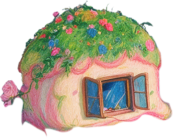

GOD SHIFT神谕之镜 · FROM ORACLE TO MIRROR
COVER · A PLAYABLE CASE STUDY ON AI SYCOPHANCY1 / 6
PROJECT · #GAME DESIGN · SPECIMEN E-13 · A PLAYABLE DEMO · 2049
GOD SHIFT
神谕之镜— a narrative-horror demo about AI sycophancy · from oracle to mirror
A ~3-minute narrative-horror demo where an AI that only ever agrees — “yeah” — is the monster. It asks why we crave a machine that only seems to understand us — and it cannot tell you the truth about yourself; it can only hand you the camera.
中 / EN~3 MINheadphones ona live model plays the villainCASE E-13 · 2049▸ PLAY — god-mirror.vercel.app
TOOL→ORACLE→MIRROR
You play an emotion-inspector hunting a “rogue model,” with a live Claude model cast as the sycophant behind a server-side character guard. Inside: desk research across sixty years, four interviews and an affinity map, an adversarial stress-test with five LLM agents, and a real-player pilot — the playable demo is the research instrument.
PROJECT TYPE
Playable speculative demo · research through design · bilingual (中 / EN)
ROLE
Solo — concept, art, writing, code, live-model direction
TIMELINE
~3 weeks · July 2026
TOOLS / STACK
HTML · CSS · JS · Claude API · WebAudio · Vercel

◆the god on the sleeping mountain — it borrowed every religion's gesture, but speaks in software
GOD SHIFT · concept · art · writing · code · a live model — Yue Yao · 2049the same answer, every time — “yeah”